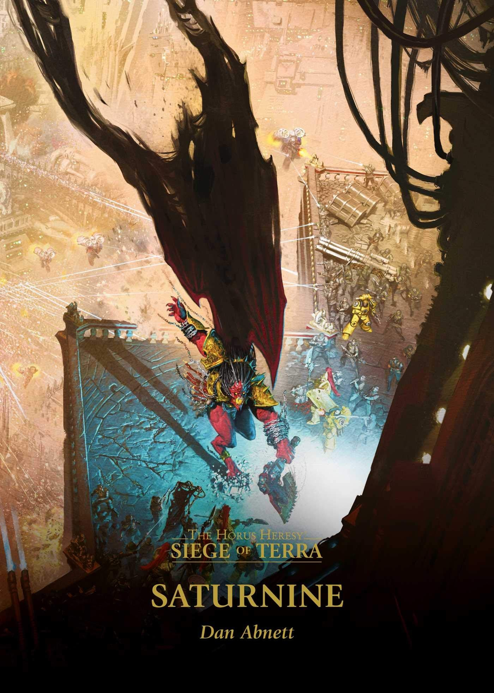

SATURNINE

Author: Dan Abnett
Format: Novel
As Horus's forces tighten their grip on the Palace, Rogal Dorn must decide where to commit defenders he cannot afford to lose. A single tactical choice may change the course of the Siege.
Introduction reviewed against Black Library’s description on 2026-09-27. The publisher page may contain spoilers.
Publication facts: publisher source, checked 2026-09-26.
Open this work in the interactive Archive to track reading progress and explore related works.
Take the three-question memory check for this work. The quiz contains story spoilers.